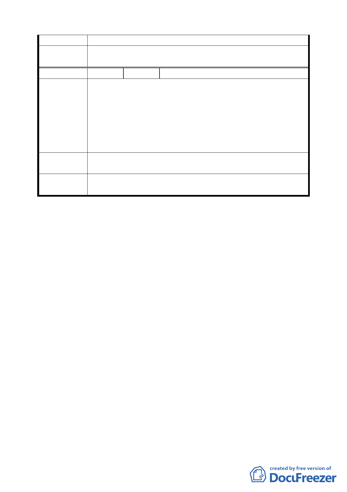

工安全問題，請開發單位妥善處理。
委
決
員
會
議
依專案小組審查結論辦理。
編 號 2 陳情人 王興國先生 西康里里長
一、一、10%之回饋土地，要求以直接回饋土地方式成立。
二、二、停車場要求直接由大都市建設將地上公園、地下停車場一
次興建完成。
建 議 辦三法、三、若確有變更必要，建請將停車場部分移出，使其面向環山
路 1 段，以避免影響巷道內之交通。
四、四、建議將停車場地下化，地上請設置為公園，以提供居民綠
地休閒空間。
專
審
案
查
小
結
組
論
同編號 1 結論。
委
決
員
會
議
依專案小組審查結論辦理。
討論事項四
案名：擬定臺北車站特定專用區 C1、D1 東半街廓聯合開發區（捷）
細部計畫案
說明：
一、本案係市府 94 年 12 月 15 日以府都規字第 09419610803 號函
送到會，並自 94 年 12 月 16 日起公開展覽 30 天。
二、法令依據：都市計畫法第 22 條及大眾捷運法第 7 條。
三、申請單位：臺北市政府（捷運工程局）
四、計畫範圍：詳計畫圖所示。
五、變更理由及內容：詳計畫說明書所示。
六、說明會日期：94 年 12 月 29 日
七、公民或團體陳情意見：共 3 件。
決議：
市府相關單位對於交通等部分議題仍有不同意見，全案俟市府協
調達成共識後再提會討論。
一三